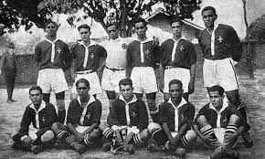
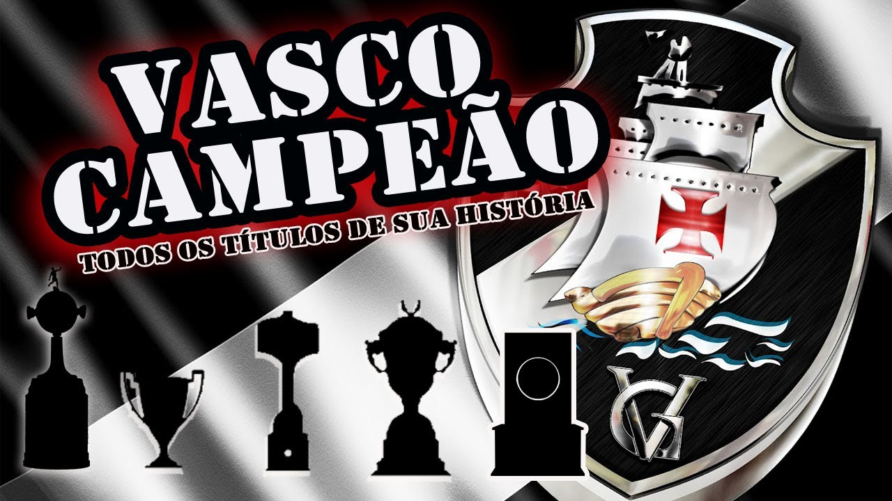
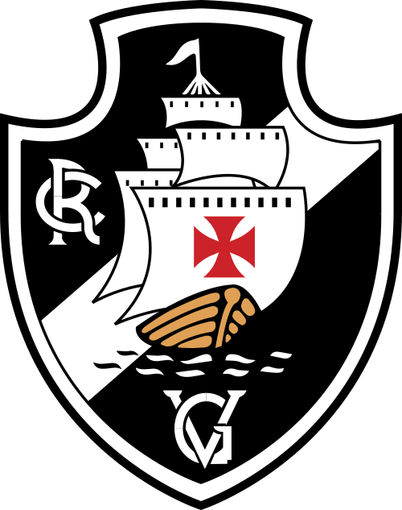

Vasco da Gama
História
O Vasco da Gama foi fundado em 21 de agosto de 1898 como um clube de remo, que escolheram o nome de batismo para homenagear o navegador português Vasco da Gama que em 20 de maio de 1498 chegou ao porto de Calecute, na Índia, se tornando o primeiro europeu a circundar o continente africano pelo Cabo da Boa Esperança.
A transição para o futebol demorou um pouco a acontecer, mas a ascensão foi rápida. Após iniciar os trabalhos na terceira divisão em 1916 chegou à elite do futebol do Rio de Janeiro em 1923 e conquistou naquele mesmo ano seu primeiro título.
Quatro anos depois nascia aquele que seria durante uma época o maior estádio da América Latina. Mais uma vez a luta estava presente no destino do clube que homenageia o navegador português que enfrentava bravos mares. O estádio de São Januário foi erguido em 1927 após uma campanha realizada para arrecadar contribuições dos sócios e torcedores.
 Hino
Vamos todos cantar de coração A Cruz de Malta é o meu pendão Tu tens o nome do heroico português Vasco da Gama, a tua fama assim se fez Tua imensa torcida é bem feliz Norte-Sul, Norte-Sul deste Brasil Tua estrela, na terra a brilhar Ilumina o mar No atletismo, és um braço No remo, és imortal No futebol, és um traço De união Brasil-Portugal No atletismo, és um braço No remo, és imortal No futebol, és um traço De união Brasil-Portugal Vamos todos cantar de coração A Cruz de Malta é o meu pendão! Tu tens o nome do heroico português Vasco da Gama, a tua fama assim se fez Tua imensa torcida é bem feliz Norte-Sul, Norte-Sul deste país Tua estrela, na terra a brilhar Ilumina o mar No atletismo, és um braço No remo, és imortal No futebol, és um traço De união Brasil-Portugal No atletismo, és um braço No remo, és imortal No futebol, és um traço De união Brasil-Portugal